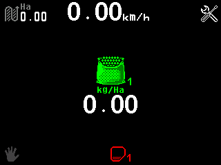

L'écran de régulation de dose
L'écran des machines qui appliquent les produits à une dose — ce qu'il affiche, ses trois états, ses couleurs, et comment accéder à partir de là aux moteurs et à leur étalonnage.
Sur l'écran de régulation de dose, vous réglez les doses de consigne des semences, de l'engrais solide, de l'engrais liquide et des produits appliqués au poids, et vous suivez la dose réellement appliquée. Il montre aussi la surface, la vitesse, les trémies, les turbines et la position de l'outil. C'est le dernier écran de travail : « HOME » depuis l'écran Statistics (ou l'écran Motors) vous y amène, et un nouvel appui sur « HOME » ramène à l'écran d'accueil. « BACK » ne quitte pas cet écran.
C'est le seul écran dont le panneau se souvienne après l'arrêt : s'il était ouvert, il s'ouvre de nouveau à la mise sous tension suivante.
Ce que montre l'écran

- Surface travaillée sur la parcelle active, en ha. Seulement avec un capteur de vitesse.
- Vitesse d'avancement, en km/h, avec les mêmes messages que sur l'écran d'accueil — voir Vitesse. Seulement avec un capteur de vitesse.
- Symbole des réglages. Touchez-le et maintenez pour ouvrir le menu principal.
- Indicateur de produit — ici le produit 1, en kg/ha. Un pour chaque produit dont au moins un doseur sous surveillance l'applique au poids.
- Dose. La dose réellement appliquée ; tant que l'indicateur est sélectionné, la consigne.
- Pause du travail — la main. Gris foncé : au travail ; jaune clignotant : application verrouillée — voir Verrouiller l'application à la main.
- Trémie, une pour chaque trémie.
Selon la machine, d'autres indicateurs apparaissent : la dose de consigne d'engrais liquide en L/ha, la dose de semences et d'engrais solide en mode « Precise » (précis), un indicateur de turbine pour chaque turbine, et la position de l'outil en bas à droite. S'il n'y a pas de place pour toutes les turbines et trémies, le panneau supprime d'abord une turbine, puis des trémies ; l'écran d'accueil les montre toujours toutes.
Trois états
- Observation — rien n'est sélectionné. Les indicateurs montrent les doses réellement appliquées.
- Modification de dose — « PLUS » ou « MINUS ». Les indicateurs de dose peuvent être sélectionnés ; voir Modifier la dose de consigne.
- Réglage des capteurs — maintenez « MENU ». Le symbole des réglages, la vitesse, les turbines, les trémies et la position de l'outil peuvent être sélectionnés ; « PLUS » et « MINUS » mettent le capteur sélectionné sous ou hors surveillance, « MENU » ouvre son menu contextuel — ou, sur le symbole des réglages, le menu principal.
Dans les deux modes, « UP » et « DOWN » déplacent la sélection, « BACK » quitte le mode, et « HOME » maintenu verrouille ou déverrouille l'application.
Couleurs d'un indicateur de dose
| Ce que vous voyez | Signification |
|---|---|
| Symbole et unité verts, valeur blanche | En ordre ; la valeur est la dose appliquée. |
| Symbole, unité et valeur rouges clignotants | La dose appliquée s'écarte de la consigne plus que permis. |
| Fond bleu-vert foncé, symbole bleu clair, valeur jaune | Sélectionné ; la valeur est la consigne. |
| !!!!, XXXX ou ???? rouges clignotants (engrais liquide seulement) | Hors surveillance / pas de liaison / un appareil de mauvais type. |
En mode « Precise », les indicateurs de semences et d'engrais affichent la population en ks/Ha tant qu'ils ne sont pas sélectionnés, et la consigne en s/m lorsqu'ils le sont.
La dose d'un produit est moyennée sur chaque tronçon de 10 m parcouru. Elle compte comme déviante lorsqu'elle s'écarte de plus de « Product rate error,% » (erreur de dose du produit, %) : l'alarme se déclenche après deux tronçons de ce genre d'affilée et s'efface après deux bons tronçons. À l'arrêt, avec l'application verrouillée ou sans doseur sous surveillance, l'indicateur affiche 0,00 et l'alarme est effacée.
Vers les moteurs et leur étalonnage
Touchez et maintenez un indicateur de produit — ou sélectionnez-le à l'état de modification de dose et appuyez sur « MENU ». Une liste des moteurs de ce produit s'ouvre (« Motor » (moteur) ou « Fert.mot. » (moteur d'engrais) avec le numéro). Sélectionnez un moteur et appuyez sur « MENU » : « Calibration, product » (étalonnage, produit), « Weight, gr » (poids, g) et « Rotations » (rotations). Comment étalonner : Étalonner un moteur au poids.
La liste n'existe que pour les produits dont les moteurs fonctionnent en « Flow » (débit) ou « Hybrid » (hybride). Si la machine avance, le panneau refuse : la vitesse doit être nulle pour un étalonnage. Un toucher maintenu sur l'indicateur d'engrais liquide ouvre le menu contextuel de la pompe.
Votre machine fait quelque chose que cette page n'explique pas ? Écrivez à support@agriwelt.com — un ingénieur vous répond.